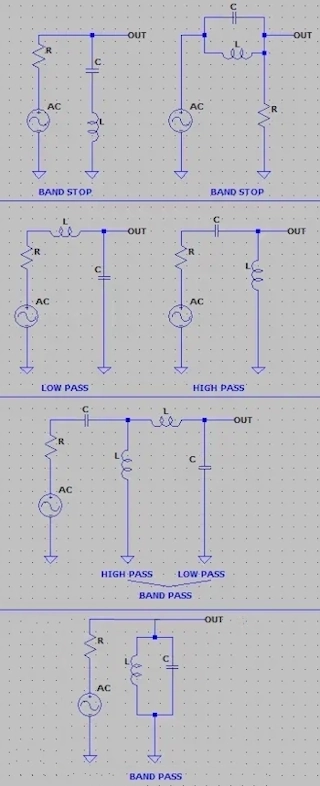

Compute the second order Passive RLC Filter using the given formula.
Fill two of the three fields to compute the desired value, the frequency, the capcitance and the indutance.
Fill the resistance to ccompute the Q factor (quality of circuit), require all other fields filled in.
The resistance is used to compute the Q factor, Higher Q more selective is the filter.
Below are the arragements of the RLC Filter circuit to act as band-stop, high-pass, low-pass and band-pass frequency. Just the arrangement dictates the type.
Inductors behave like a short circuit for low frequencies and like an open circuit for high frequencies.
Capacitors are the opposite, they behave like a short circuit for high frequencies and an open circuit for low frequencies.
Due to these properties, it is possible to build filters.
| fo | Ressonance Frequency in hertz |
| C | Capacitance in farad |
| L | Inductance in henry |
| R | Resistance in ohms |
| Q | Quality factor |
| BW | Bandwidth 6dB in hertz |
| fo | |
| C | |
| L | |
| R | |
| Q | |
| BW 6dB | |
| ---| Cientific Notation |--- | ||||
| femto | pico | nano | micro | mili |
| e-15 | e-12 | e-9 | e-6 | e-3 |
| Kilo | Mega | Giga | Tera | Peta |
| e+3 | e+6 | e+9 | e+12 | e+15 |

References:
Wikipedia RLC circuit